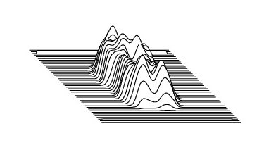

| .OPERATION: | TP | ; Three dimensional plot |
| .INPUT FILE: | savpad_nik_sli_45 | ; Image to be plotted |
| .POSTSCRIPT OUTPUT FILE: | tp | ; Plot file |
| .SKIPPING FACTOR: | 2 | ; Plot every 2 lines |
| .SCALE FACTOR: | ; Default scale = 1 | |
| .PLOT MINIMA ALSO? (Y/N): | No | ; No minima |
| INPUT | POSTSCRIPT OUTPUT |
|---|---|
|  |
| savpad_nik_sli_45 | tp |